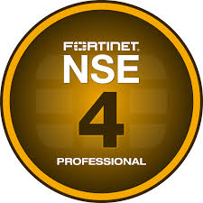
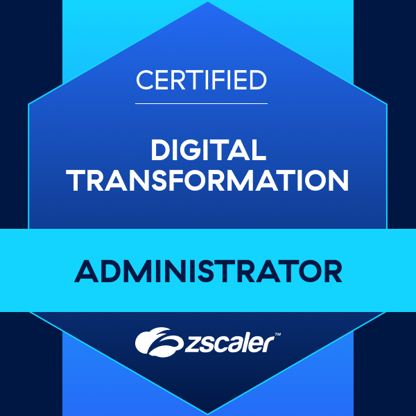

About Me
I'm Jay, originally from China and now living in New Zealand. I'm an Infrastructure Engineer specializing in security and cloud solutions, primarily working with Microsoft technologies. My experience spans from Azure cloud to on-premises servers, backups, and networking.
Skills & Focus
- Microsoft 365 and Entra ID enviroment administration
- Azure cloud architecture and security
- On-premises infrastructure and server administration
- Backup strategies and disaster recovery
- Networking and troubleshooting
- Microsoft-based tooling and automation
Contact
If you'd like to reach out, please use the contact page.
Certifications

